| SampleDepth | Sources | Station | Time | Latitude | Longitude | Xkm | Ykm | Month | Year | BottomDepth | Season | Discovery | RelativeDepth |
|---|---|---|---|---|---|---|---|---|---|---|---|---|---|
| 517 | 28.73 | 1 | 3 | 50.1508 | -14.4792 | -34.106 | 16.779 | 4 | 2001 | 3939 | 1 | 252 | 3422 |
| 582 | 27.90 | 1 | 3 | 50.1508 | -14.4792 | -34.106 | 16.779 | 4 | 2001 | 3939 | 1 | 252 | 3357 |
| 547 | 23.44 | 1 | 3 | 50.1508 | -14.4792 | -34.106 | 16.779 | 4 | 2001 | 3939 | 1 | 252 | 3392 |
| 614 | 18.33 | 1 | 3 | 50.1508 | -14.4792 | -34.106 | 16.779 | 4 | 2001 | 3939 | 1 | 252 | 3325 |
| 1068 | 12.38 | 1 | 3 | 50.1508 | -14.4792 | -34.106 | 16.779 | 4 | 2001 | 3939 | 1 | 252 | 2871 |
| 1005 | 11.23 | 1 | 3 | 50.1508 | -14.4792 | -34.106 | 16.779 | 4 | 2001 | 3939 | 1 | 252 | 2934 |
GAMS
Generalized Additive Models
As a general comment, they are being less used in data science (but still “state of the art” in many biological fields)
Machine learning is a general replacement
Understanding GAM’s is a great way to understand Machine Learning
All your potential issues with GAM’s (aren’t we just overfitting? are worse with machine learning)
Machine learning models are data-driven rather than explicitly designed by humans
Linear models
Linear models work great and are super powerful when assumptions are met!
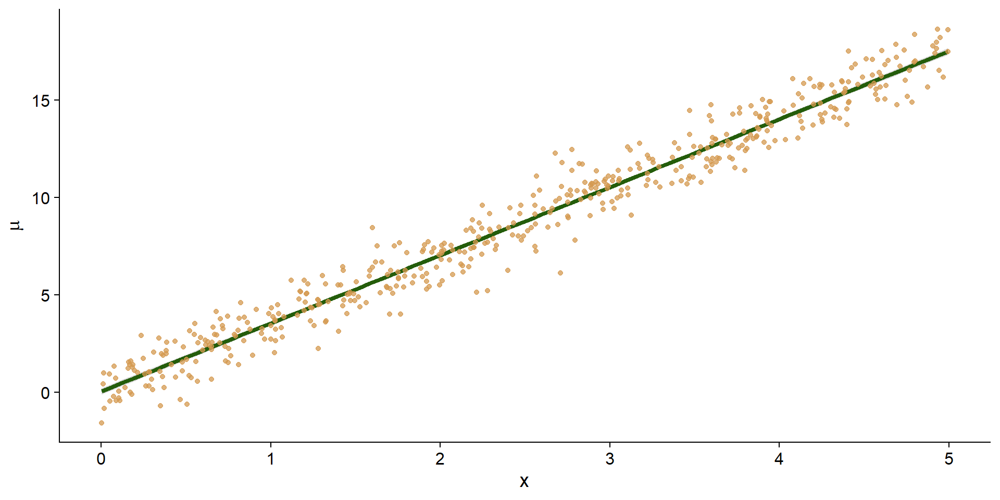
What happens when they are not met?
Non normal error
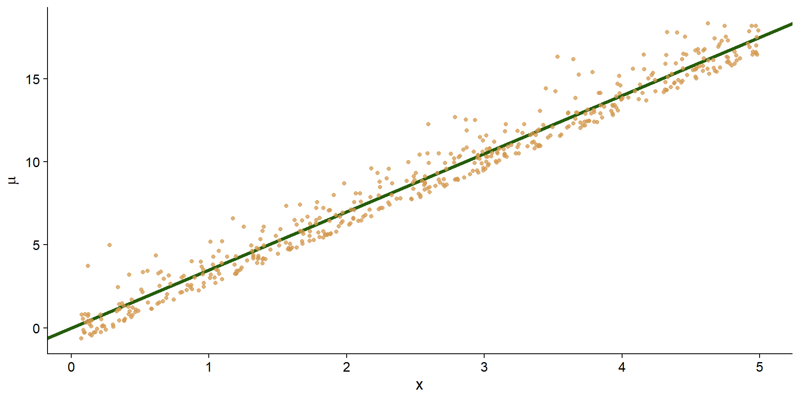
What happens when they are not met?
Not homoscedastic
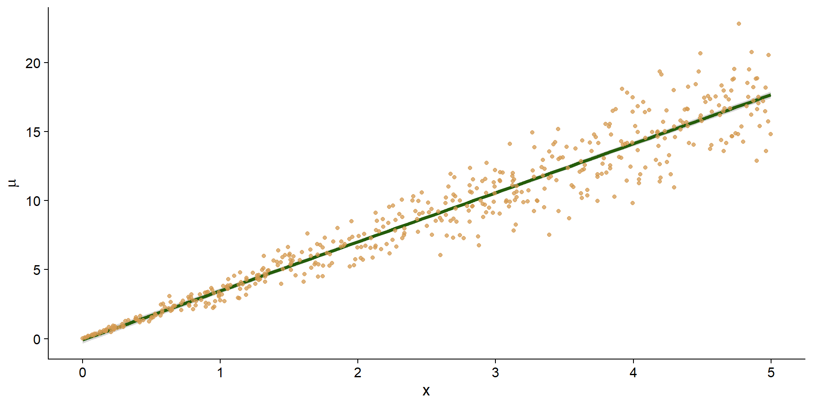
No equal variance
What happens when they are not met?
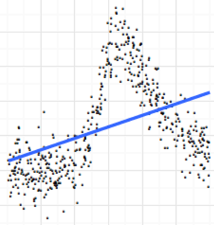
Non linear
What can we do?
Sometime we can add a polygon term
Sometimes we can transform the data
GLM
Mixed model?
GAMS
Example
We will work with a dataset from the Quebec Centre for Biodiversity Science.
If you want to work with it, you can load the ISIT dataset and look at it
This dataset is comprised of bioluminescence levels (Sources) in relation to depth, seasons and different stations
Example
We will work with a dataset from the Quebec Centre for Biodiversity Science.
Load the ISIT dataset and look at it
This dataset is comprised of bioluminescence levels (Sources) in relation to depth, seasons and different stations
What may affect bioluminiscence?
Data analysis
Subset the data to only look at season 2.
Run a linear model:
Data analysis
Call:
lm(formula = Sources ~ SampleDepth, data = isit2)
Residuals:
Min 1Q Median 3Q Max
-17.355 -6.028 -2.015 4.074 28.372
Coefficients:
Estimate Std. Error t value Pr(>|t|)
(Intercept) 30.9021874 0.7963891 38.80 <2e-16 ***
SampleDepth -0.0083450 0.0003283 -25.42 <2e-16 ***
---
Signif. codes: 0 '***' 0.001 '**' 0.01 '*' 0.05 '.' 0.1 ' ' 1
Residual standard error: 7.741 on 451 degrees of freedom
Multiple R-squared: 0.5889, Adjusted R-squared: 0.588
F-statistic: 646.1 on 1 and 451 DF, p-value: < 2.2e-16Plot the model

- How does this look?
Plot

There is a strong non-linear relationship between
SourcesandSampleDepth.The error is not normally distributed.
The variance of the error is not homoscedastic.
The errors are not independent of each other.
Plot

How can we deal with this? In a non-GAM way?
Plot
Let’s diagnose this plot!
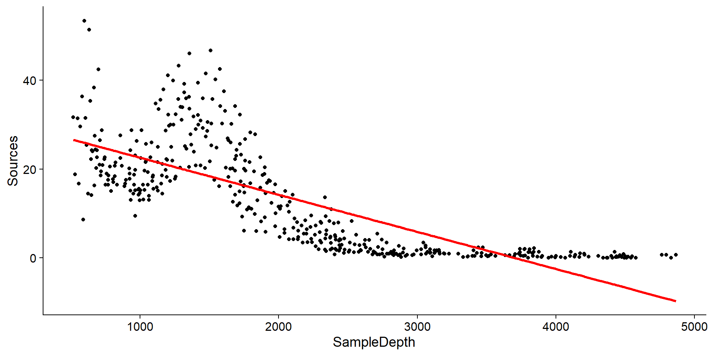
Will compare that to:
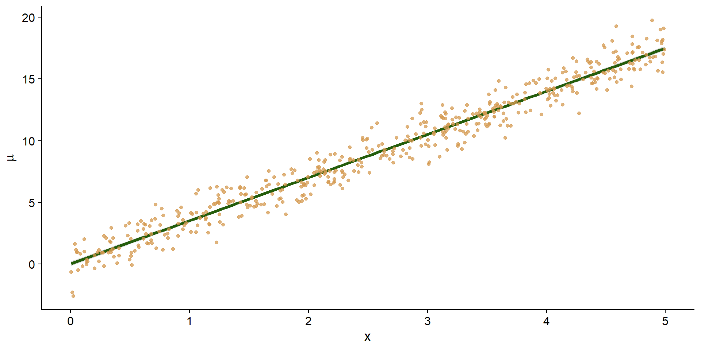
Plots
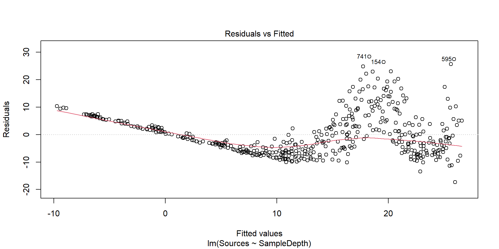
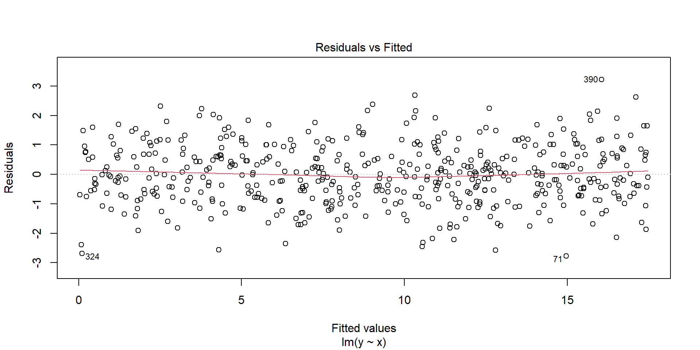
Plots
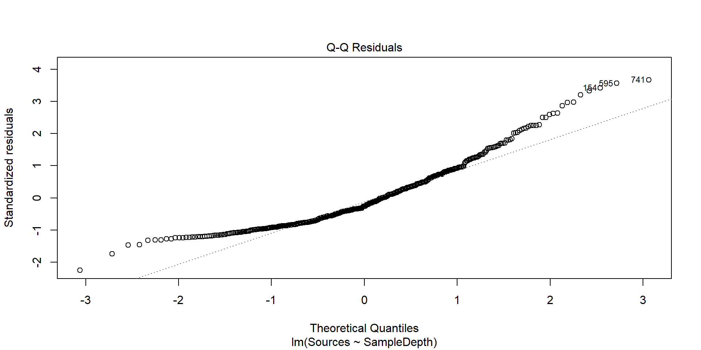
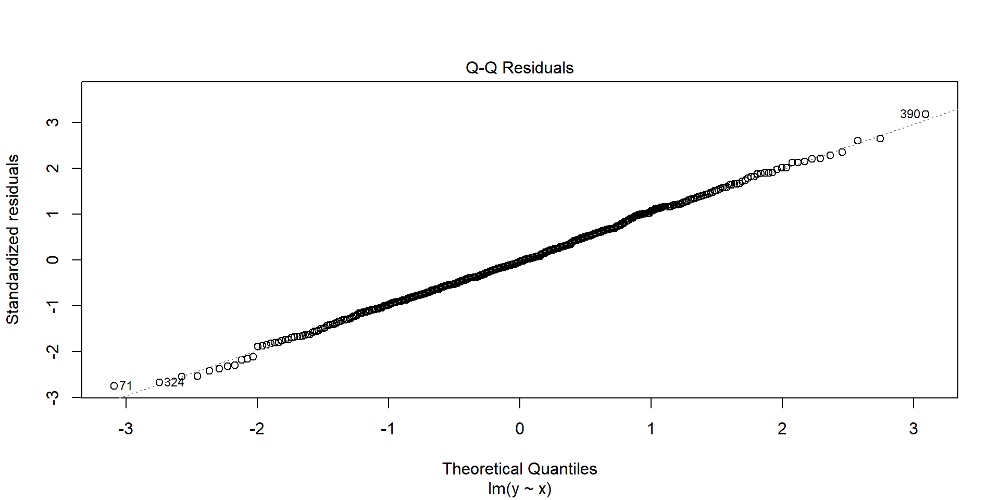
Plots
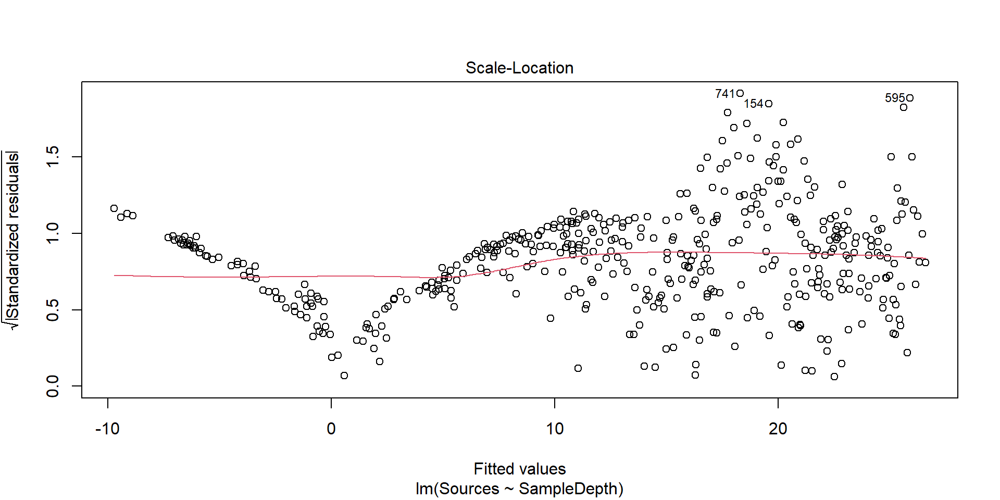
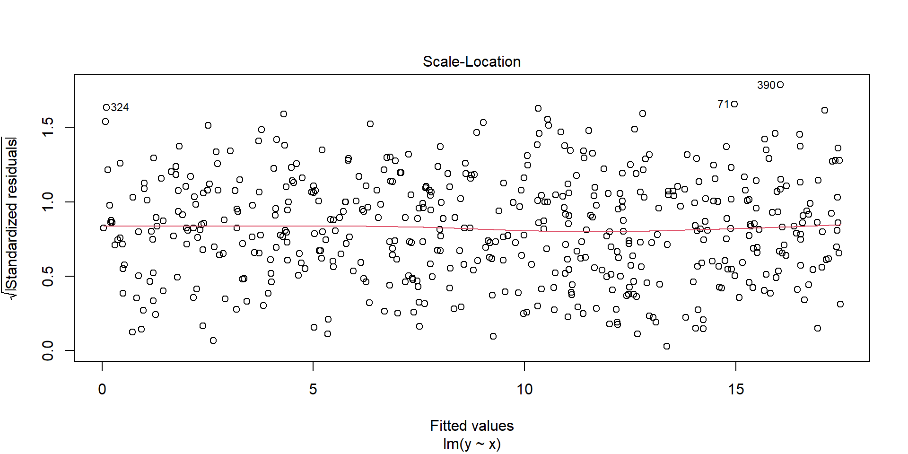
As a reminder
LM’s:
\(y_i \sim \beta_0 +\beta_1(x_{1,i}) + \beta_2(x_{2,i}) + ... + \epsilon\)
And GLM:
\(g(E[y_i]) = \beta_0 +\beta_1(x_{1,i}) + \beta_2(x_{2,i})\)
\(y_i \sim dist(E[y_i])\)
As a reminder
GAMs are effectively a nonparametric form of regression where the \(\beta x_i\) of a linear regression is replaced by a smooth function of the explanatory variables \(f(x_i)\), so:
\(y_i \sim f(x_i) + \epsilon\)
GAM’s
\(E[y_i] = \beta_0 + f(x_i)\)
where \(f\) is the smooth function
\(y_i \sim DistExpoFam(E[y_i],...)\)
How to run?
How to run?
Family: gaussian
Link function: identity
Formula:
Sources ~ s(SampleDepth)
Parametric coefficients:
Estimate Std. Error t value Pr(>|t|)
(Intercept) 12.8937 0.2471 52.17 <2e-16 ***
---
Signif. codes: 0 '***' 0.001 '**' 0.01 '*' 0.05 '.' 0.1 ' ' 1
Approximate significance of smooth terms:
edf Ref.df F p-value
s(SampleDepth) 8.908 8.998 214.1 <2e-16 ***
---
Signif. codes: 0 '***' 0.001 '**' 0.01 '*' 0.05 '.' 0.1 ' ' 1
R-sq.(adj) = 0.81 Deviance explained = 81.4%
GCV = 28.287 Scale est. = 27.669 n = 453Let’s compare them!
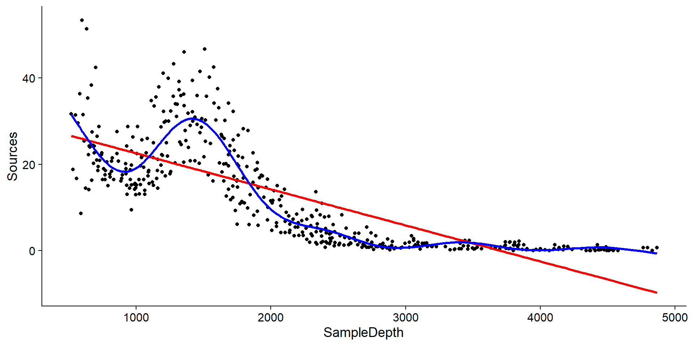
We can plot them easily using mgcv
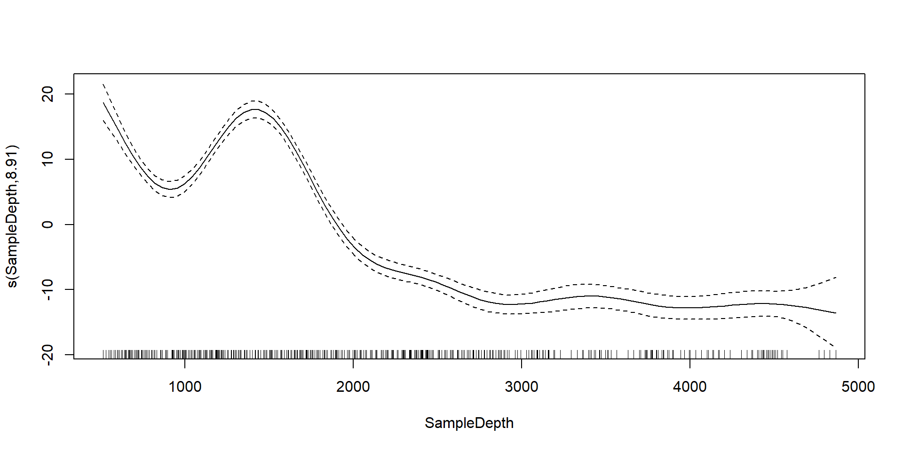
Comparing them using AICc
Comparing them using AICc
You can also use:
Discussions
When to run a GAM vs a GLM?
How can we avoid overfitting in GLMs and particularly GAMs?
If GAMs can deal with both linear and not linear data why not just run a GAM instead of a GLM?
How can we assess the fit of a Generalize linear model (GLM) or Generalize additive model (GAM)?
How do I interpret the results of a generalized additive model, especially when we use smooth functions? you will do this for the assignment… do not discuss right now
What does an actual equation in the GAM formulation look like? Instead of just g(u)=f(X)
How is scatterplot smoothing not just overfitting the data?
It seems like a GAM is just a GLM with a transformation to help smooth out the data. Could you not just transform the data yourself in the GLM? Would the GAM transform the data in a way that is not appropriate for everyone’s analysis?
What does “smooth functions of features” mean and how is it different from linear features?
How do we select number of splines or knots? How do we select basis functions
Is there some approach to model selection to approximate an appropriate basis function from the basis space?
Discussion: today
If GAMs can deal with both linear and not linear data why not just run a GAM instead of a GLM?
When to run a GAM vs a GLM?
How can we avoid overfitting in GLMs and particularly GAMs?
How is scatterplot smoothing not just overfitting the data?
Season 2
How to plot this?

Season 2
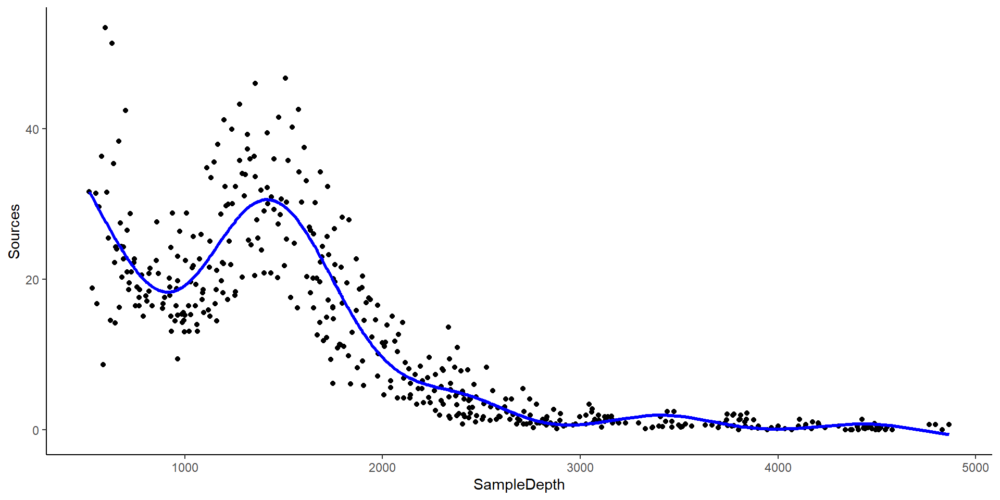
Season 1
Do the same thing for season #1
Run the GAM and compare it to a linear model
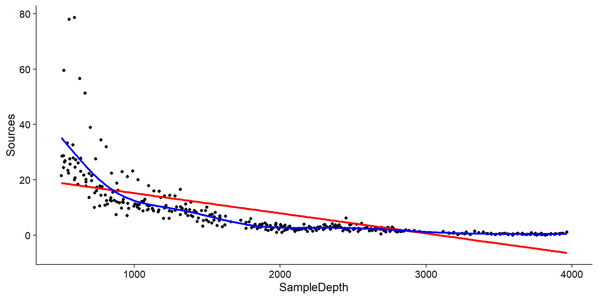
Are they overfitted?

Maybe… Some of you said yes!
Some of you said, how is this different than overfitting a linear model?
- What is overfitting?
Discussion
How can we avoid overfitting in GLMs and GAMs?
How is scatterplot smoothing not just overfitting the data?
- What is overfitting?
Overfitting
What is overfitting?
What if data is “wiggly”? Because the underlying hidden process (parameter/ population) data IS wiggly?
Remember… it is all about the underlying real process (AKA real population parameter)
Example
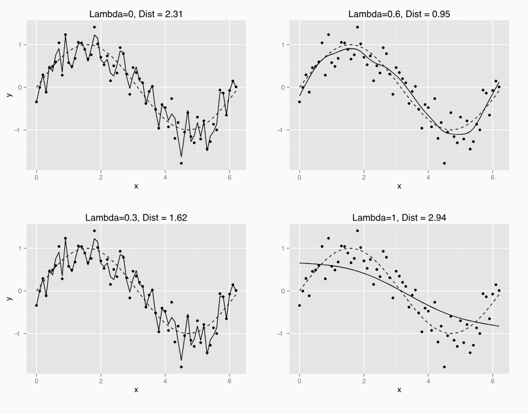
Another example
https://m-clark.github.io/generalized-additive-models/case_for_gam.html#polynomial-regression-1
Overfitting
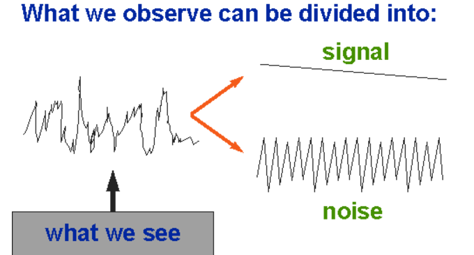
Overfitting
I don’t love the “signal vs noise” definition
In my mind:
Overfitting happens when you are modelling the error rather than the parameter
You are always seeking a balance between variance and bias
Under fitting a complex process (given by \(f(x)\) is also not good!
Overfitted models and cross validation
Overfitted models have a GREAT FIT with the training dataset
Bad or mediocre fit with the testing set
We will test this!
Let’s remember our simulations of data:
- We simulate x
- \(y_i = \beta_0 + \beta_1x + \epsilon\)
- \(\epsilon \sim N(0, 0.5)\)
- What if the data is explained by
- https://m-clark.github.io/generalized-additive-models/case_for_gam.html#polynomial-regression-1
Why run a GAM? (When?)
A linear model doesn’t work great for all datasets
If the underlying process is not linear (or can’t be made linear with a specific link-function)
Using a line to fit these complex data / systems would underfit
We assume that the data is a good/ok representation of the population/process. If not… you have bigger problems than simply modeling
GAM
GAM can capture complexe relationships by fitting a non-linear smooth function through the data, while controlling how wiggly the smooth
How do they work?
What does an actual equation in the GAM formulation look like? Instead of just g(u)=f(X)
\(y_i = \beta_0 + \beta_1x + \epsilon\)
\(y_i = f(x_i) + \epsilon_i\)
\(f(x) = \sum_{j=i}^q b_j(x) \beta_j +\epsilon\)
\(f(x) = \sum_{j=i}^d F_j(x) \beta_j +\epsilon\)
Each \(F_j\) (or \(b_j\)) is a basis function (transformed x)
If \(f\) is a fourth order polynomial, then:
\(b_0(x) = 1, \ b_1(x) = x, \ b_2(x) = x^2, \ b_3(x) = x^3, \ b_4(x) = x^4\)
Polynomial Spline
We separate the data in many small pieces
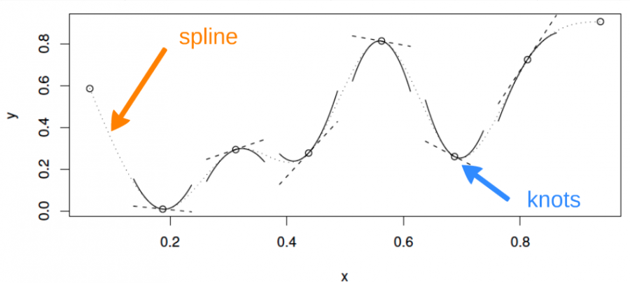
Think of this a piecewise polynomial.
However, we’ll end up with a smoother and connected result when all is said and done
https://m-clark.github.io/generalized-additive-models/building_gam.html
How is it any different than the piecewise polynomial?
See: https://m-clark.github.io/generalized-additive-models/technical.html#a-detailed-example
splines and knots
- Splines: These are the smooth, flexible functions used to approximate relationships between predictor variables and the response variable. They are piecewise polynomial functions that fit different segments of the data while ensuring smooth transitions between them. In GAMs, splines are commonly used to model non-linear relationships.
- Knots: These are the specific points in the range of the predictor variable where the pieces of the spline function connect. The number and placement of knots determine the flexibility of the spline. More knots allow for more flexibility, but too many can lead to overfitting.
Piecewise polynomial?
- Smoother than the piecewise and CONNECTED!
How many knots?
How do we select number of splines or knots?
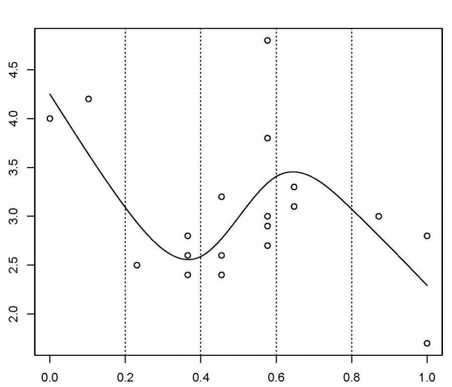
This have 5 knots… but that’s not usually what it’s done
We (or the package) control the model’s smoothness by adding a “wiggleness” penalty
How can we choose the number of knots? And where to place them
Number of knots
How to choose where and how many knots?
Is there a good way?
We use a term \(\lambda\) to penalize for wiggliness (Monday!) Many ways to estimate it… but what is important is that we are NOT TRYING TO MINIMIZE residuals!
More knots potentially means more ‘wiggliness’
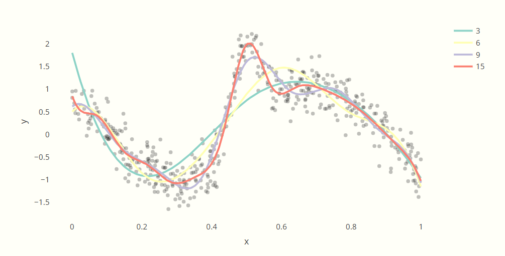
Decide number of knots
The odds of you knowing beforehand the number of knots and where to put them is somewhere between slim and none
- We could do it by hand… or let the package do it. There are many ways that “penalties” can get decided. I would not estimate them by hand
Number of knots and penalties
- Penalize for wiggliness which affects the base polynomial and the number of knots
- The penalty regards the complexity of the model, and specifically the size of the coefficients for the smooth terms. The practical side is that it will help to keep us from overfitting the data, where our smooth function might get too wiggly.
Balance between minimizing “residuals” and wiggleness
Fit model by minimizing:
\(||y-XB||^2 + \lambda \int_{0}^1 [f'' (x)]^2 dx\)
As \(\lambda\) increases it tends towards linearity
Cross validation
Cross validation is another way to find a good fit (REML in mgvc)
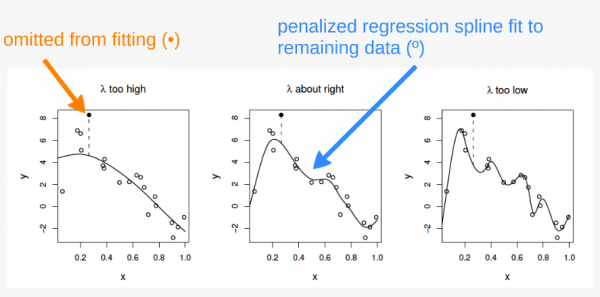
Smoothnees
Trying to find a balance between bias and variance
You want to minimize residuals while also explaining “the signal”
- In GAMS EDF give us the “wiggliness”
Smoothness
Family: gaussian
Link function: identity
Formula:
Sources ~ s(SampleDepth)
Parametric coefficients:
Estimate Std. Error t value Pr(>|t|)
(Intercept) 12.8937 0.2471 52.17 <2e-16 ***
---
Signif. codes: 0 '***' 0.001 '**' 0.01 '*' 0.05 '.' 0.1 ' ' 1
Approximate significance of smooth terms:
edf Ref.df F p-value
s(SampleDepth) 8.908 8.998 214.1 <2e-16 ***
---
Signif. codes: 0 '***' 0.001 '**' 0.01 '*' 0.05 '.' 0.1 ' ' 1
R-sq.(adj) = 0.81 Deviance explained = 81.4%
GCV = 28.287 Scale est. = 27.669 n = 453EDF tells us how “wiggly” our model is
Essentially, more EDF imply more complex, wiggly splines
EDF close to 1 –> close to linear term (probably better running a linear model)!
Can I do it myself?
It seems like a GAM is just a GLM with a transformation to help smooth out the data. Could you not just transform the data yourself in the GLM? Would the GAM transform the data in a way that is not appropriate for everyone’s analysis?
See: https://m-clark.github.io/generalized-additive-models/technical.html#a-detailed-example
Questions to think about
If a GAM can handle linear and non-linear relationships, why not run a GAM first and pivot to a GLM if necessary?
Is there some approach to model selection to approximate an appropriate basis function from the basis space?
Let’s look at another example
We can combine linear and smooth terms!
isit$Season <- as.factor(isit$Season)
model_seasons <- gam(Sources ~ Season + s(SampleDepth), data = isit,
method = "REML")
summary(model_seasons)
Family: gaussian
Link function: identity
Formula:
Sources ~ Season + s(SampleDepth)
Parametric coefficients:
Estimate Std. Error t value Pr(>|t|)
(Intercept) 7.2533 0.3613 20.08 <2e-16 ***
Season2 6.1561 0.4825 12.76 <2e-16 ***
---
Signif. codes: 0 '***' 0.001 '**' 0.01 '*' 0.05 '.' 0.1 ' ' 1
Approximate significance of smooth terms:
edf Ref.df F p-value
s(SampleDepth) 8.706 8.975 184.4 <2e-16 ***
---
Signif. codes: 0 '***' 0.001 '**' 0.01 '*' 0.05 '.' 0.1 ' ' 1
R-sq.(adj) = 0.692 Deviance explained = 69.5%
-REML = 2615.8 Scale est. = 42.413 n = 789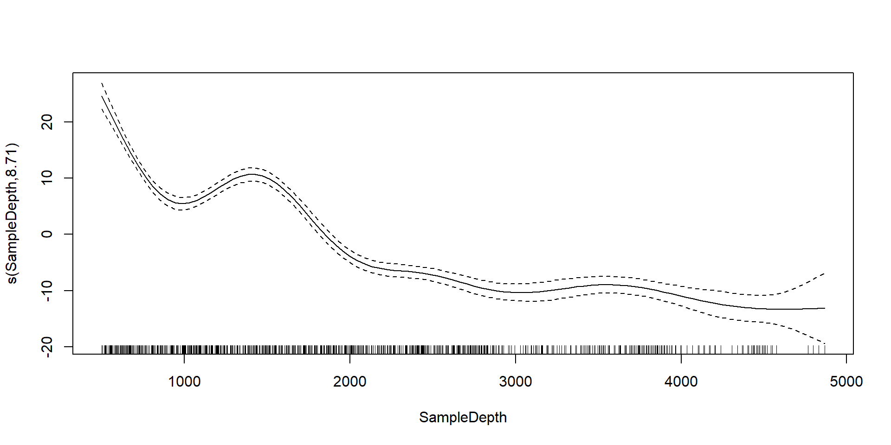
Example

Example
Run a model with Season (season should be a factor!), Sample Depth (smooth), and relative depth (linear) and explore it
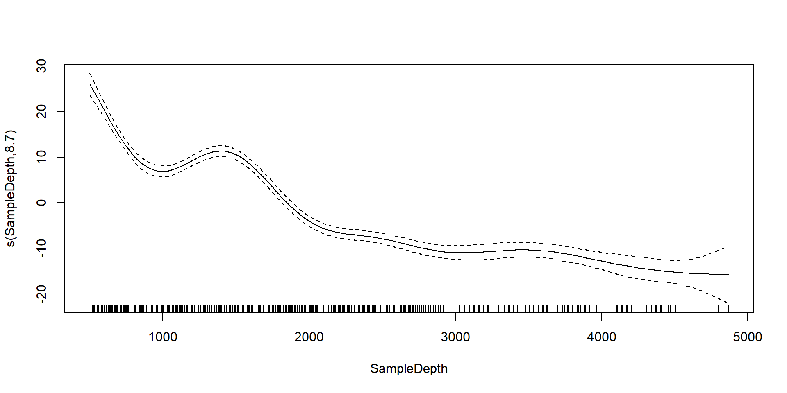
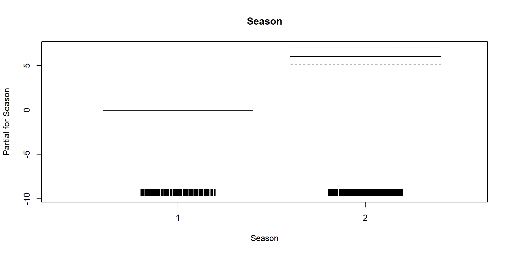
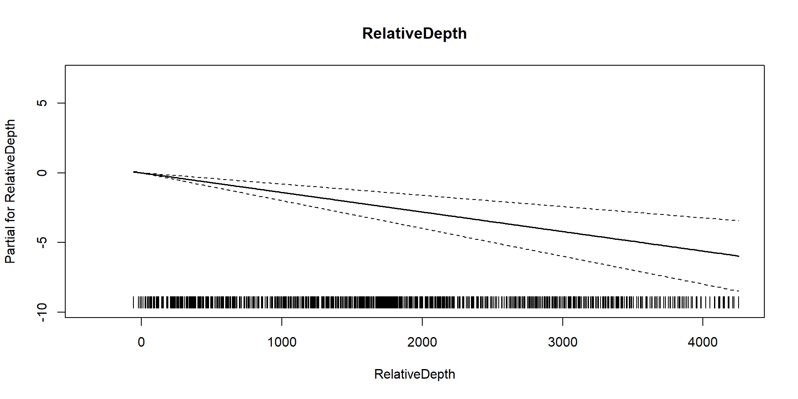
Analysis of variance (ANOVA)
Family: gaussian
Link function: identity
Formula:
Sources ~ Season + s(SampleDepth) + RelativeDepth
Parametric Terms:
df F p-value
Season 1 160.6 < 2e-16
RelativeDepth 1 22.3 2.76e-06
Approximate significance of smooth terms:
edf Ref.df F p-value
s(SampleDepth) 8.699 8.974 132.5 <2e-16Interpreting a GAM
GAM vs GLM debate. What is easier to interpret?
I personally would not run a GAM unless absolutely necessary!
How can I modify the smoothness?
The smoothness is chosen using a cross-validation (prediction error) or likelihood based method.
You generally won’t be selecting it (unless you do it by hand and develop your own optimization technique).
This package offers multiple methods for smoothing.
How can I modify the smoothness?
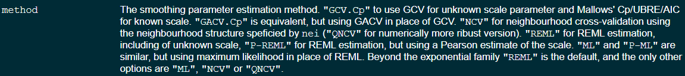
How can I modify the smoothness?
I tried all of them in multiple datasets and the differences are minuscule. I prefer REML because it uses cross validation and maximum likelihood
How about the basis dimensions?
We can choose these and actually do model selection! The package usually “selects one”. Increasing it gives us “more flexibility” and increases edf (assignment)
More about the gam function
As always… you should read the documentation of the package and the help file!
- You can specify a “family” and can run Poisson, Binomial, etc.
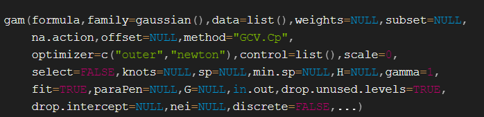
Assignment
I uploaded a GAM assignment to Canvas.
Other topics
Bayesian statistics. We will start talking about it
Some multivariate towards the end.